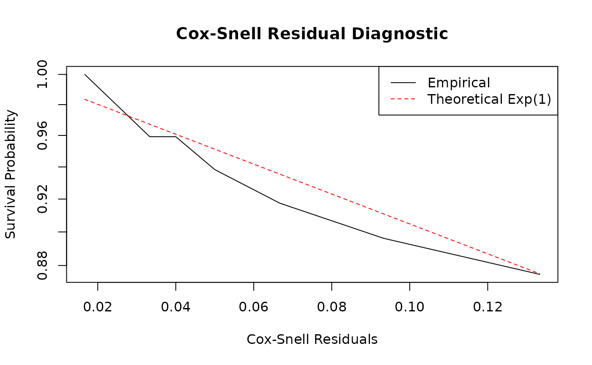

Introduction to Relational Event Models
Source:vignettes/introduction_to_rem.Rmd
introduction_to_rem.RmdAbstract
The redeem package provides tools for the scalable
estimation of continuous-time network models. While its primary focus is
on models that explicitly incorporate duration (Durational Event
Models), the framework natively supports standard Relational
Event Models (REM) for point-process interaction data via the
rem() function. This vignette illustrates how to estimate
REMs, interpret the results, and evaluate model fit using simulated
data.
Theoretical Framework: Relational Event Models
A standard Relational Event Model (REM) conceptualizes social interactions as instantaneous events in continuous time. It models a stream of interactions between actors without associated durations (e.g., sending an email, posting a tweet, or a discrete behavioral action).
The generating mechanism of a REM is a multidimensional point process, where each potential directed dyad \((i,j)\) has a distinct, continuous-time intensity (or rate) of interaction: \[\lambda_{ij}(\mathscr{H}_t, \beta, \alpha, \gamma) = \exp(s_{ij}(\mathscr{H}_t)^\top \beta + \alpha_i + \alpha_j + f(t, \gamma))\]
where:
- \(\mathscr{H}_t\) is the history of interactions up to time \(t\).
- \(s_{ij}(\mathscr{H}_t)\) is a vector of dynamic network statistics capturing the structural history of interactions up to time \(t\).
- \(\beta\) are the structural parameters governing these statistics.
- \(\alpha_i\) and \(\alpha_j\) are actor-specific baseline activity and popularity parameters (degree effects).
- \(f(t, \gamma) = \sum_{q=1}^Q \gamma_q \mathbb{I}(c_{q-1} \le t < c_q)\) is a baseline step-function that captures temporal variations in the overall intensity. The indicator function \(\mathbb{I}(c_{q-1} \le t < c_q)\) takes the value 1 if \(c_{q-1} \le t < c_q\) and 0 otherwise, where \(0 = c_0 < c_1 < \dots < c_Q\) are specified change points and \(\gamma = (\gamma_1, \dots, \gamma_Q)^\top\) is the baseline parameter vector (with \(\gamma_1 = 0\) imposed for model identifiability).
Summary Statistics and Degree Effects
The package implements several key statistics to capture network
dynamics. For full mathematical definitions and descriptions of the
available transformations (e.g., log, sig,
bin), please refer to the redeem_terms
documentation.
When specifying a REM, it is crucial to balance structural network statistics with actor-specific heterogeneity features:
- Structural Effects: Variables like Inertia (\(s_{ij}(\mathscr{H}_t) = N_{ij}(t)\)) and Common Partners (shared coworkers or associates) capture complex endogenous dependencies reflecting the structural embedding of the network sequence.
- Degree Effects (Actor Heterogeneity): Including sender (\(\alpha_i\)) and receiver (\(\alpha_j\)) degree effects is important to account for inherent individual activity. Omitting these degree effects often causes an omitted variable bias where structural parameter estimates artificially inflate to absorb underlying actor heterogeneity.
- Temporal Effects: Including terms that adapt to the baseline time accounts for non-stationarity in the overall intensity. Overlooking temporal fluctuations assumes all point occurrences are identically sequenced in exponential arrival gaps without burstiness or varying base density.
Example: Simulating and Fitting a REM
Let’s simulate a basic relational event stream and fit a scalable REM.
Data Preparation
For a standard REM, the event sequence is represented as a matrix
with three main columns: time, from, and
to. (If a type column is present, standard REM
treats all interactions as instantaneous events of type 1).
Model Fitting
We estimate the REM using the rem() function. The model
formula is specified using the model terms documented in
redeem_terms. In this simple example, we fit an
intercept-only model. Complex combinations of structural network
statistics and explicit node parameters can be mapped analogously.
# Fit the Relational Event Model
fit_rem <- rem(
events = events,
n_nodes = n_nodes,
formula = ~1,
control = control.redeem(estimate = "Blockwise")
)
# View summaries using `summary.redeem_result`
summary(fit_rem)
#> Call:
#> rem(events = events, formula = ~1, n_nodes = n_nodes, control = control.redeem(estimate = "Blockwise"))
#>
#> Fixed Effects:
#> Estimate Std. Error t value Pr(>|t|)
#> Intercept -3.40120 0.40825 -8.3312 < 2.2e-16 ***
#> ---
#> Signif. codes: 0 '***' 0.001 '**' 0.01 '*' 0.05 '.' 0.1 ' ' 1
#>
#> Log-likelihood: -26.407
#>
#> Estimation time: 0.006723642 secsSimulation and Model Diagnostics
Ensuring your estimated REM accurately reflects the observed data involves rigorous simulation and residual checking tests against continuous network evolution.
Predicting and Simulating Events
The redeem package enables generating brand-new
event networks using the estimated parameters. Utilizing the
simulate() method on the fitted object:
# Simulate networks from the fitted REM
simulated_events <- simulate(fit_rem, nsim = 100, time_horizon = 10)Comparing networks generated from this simulation against your observed data provides a holistic check. If macroscopic patterns (e.g., degree distribution, inter-arrival times, sequence clustering) match comprehensively, the model exhibits good structural and generating fit.
Residual Analysis
To statistically diagnose the fit at the dyad level, you can assess the model’s unobserved error using Cox-Snell residuals.
The concept relies on the property that if the specified intensity \(\lambda_{ij}(t)\) is the true generating model, then the integrated cumulative intensity computed up to the precise time of an observed dyadic event will behave like a standard exponential random variable \(Exp(1)\).
The redeem package provides the
get_residuals() function to automate this check. It
calculates the cumulative intensities for all dyads and returns
Kaplan-Meier estimates of the residual survival function alongside the
theoretical \(Exp(1)\) curve.
# Extract residuals for diagnostics using `get_residuals()`
# Note: Ensure return_data = TRUE was set in `control.redeem()`
resids <- get_residuals(fit_rem)
# Plot the Kaplan-Meier estimate of the residual survival vs. Theoretical Exp(1)
plot(resids$time, resids$surv, type = "l", log = "y",
xlab = "Cox-Snell Residuals", ylab = "Survival Probability",
main = "Cox-Snell Residual Diagnostic")
lines(resids$time, resids$theoretical, col = "red", lty = 2)
legend("topright", legend = c("Empirical", "Theoretical Exp(1)"),
col = c("black", "red"), lty = 1:2)
If the model is accurately specified, the empirical survival curve (black line) should closely follow the theoretical exponential decay (red dashed line). Significant deviations, especially in the tails, suggest that the model fails to capture certain temporal dynamics or that there is unmodeled heterogeneity among dyads.